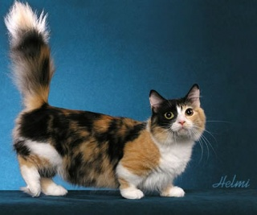
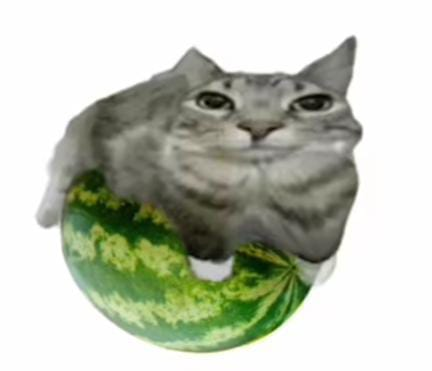

Michis Tiernos
Muy adorables y queridos en todo el mundo
Los gatos son criaturas increíblemente adorables para la mayoría de las personas. Nos acompañan a lo largo de la vida, brindándonos
su cariño y amor, junto con algún que otro mordisco, pero no importa, porque estos hermosos animales están a nuestro lado en los
mejores y peores momentos. Mientras nosotros atendemos todas sus necesidades y los mimamos, ellos disfrutan de una vida tranquila
y relajada.
Además de ser excelentes compañeros, los gatos han tenido un impacto significativo en el mundo de los memes. Su naturaleza curiosa
y juguetona, junto con sus expresiones únicas y comportamientos divertidos, los han convertido en protagonistas de innumerables memes
en internet. Desde el famoso "Grumpy Cat" hasta videos virales de gatos haciendo travesuras, estos felinos no solo nos alegran la vida
en persona, sino también en el mundo digital. Los memes de gatos no solo nos entretienen, sino que también fortalecen la conexión entre
los amantes de los gatos en todo el mundo, creando una comunidad global unida por el amor a estos maravillosos animales.
Grumpy Cat:

A continuación le muestro una lista de las características que tienen los michis:
- Independencia: Los gatos son conocidos por ser animales independientes. A menudo disfrutan de su propio espacio y tiempo,
y aunque pueden ser cariñosos, no siempre buscan la atención constante de sus dueños como algunos perros.
- Higiene: Los gatos son animales muy limpios. Pasan una gran cantidad de tiempo acicalándose y limpiándose. Su lengua áspera
les ayuda a eliminar la suciedad y el pelo suelto, manteniendo su pelaje en buen estado.
- Agilidad: Los gatos son extremadamente ágiles y flexibles. Pueden saltar grandes distancias, trepar y moverse con una gracia
impresionante. Sus cuerpos están diseñados para la caza y el acecho, lo que les permite moverse con sigilo y precisión.
- Curiosidad: Los gatos son naturalmente curiosos. Les encanta explorar su entorno y examinar cualquier cosa nueva o desconocida.
Esta curiosidad los lleva a investigar cada rincón de la casa y a jugar con todo tipo de objetos.
- Comportamiento nocturno: Los gatos son crepusculares, lo que significa que son más activos durante el amanecer y el atardecer.
Aunque pueden adaptarse a los horarios de sus dueños, sus instintos naturales los llevan a ser más enérgicos y juguetones durante
estas horas del día.
¿Tu sueño es acariciar un gatito?, acá te muestro una lista de como hacerlo paso a paso

- Acércate con calma: Asegúrate de acercarte al gatito de manera tranquila y lenta para no asustarlo. Permítele verte y olerte primero.
- Deja que te huela: Extiende tu mano como si fueras a hacer un apretón de manos en una entrevista. Deja que el gatito la huela y
decida si eres digno de su majestad.
- Observa su lenguaje corporal:Si el gatito parece relajado y no muestra signos de estrés (como orejas hacia atrás, cola agitada o
gruñidos), es probable que esté listo para ser acariciado.
- Comienza suavemente: Con la delicadeza de un mimo acariciando una burbuja usa la punta de tus dedos para acariciar la cabeza
del gatito, especialmente alrededor de las orejas y debajo de la barbilla. Estos son puntos que muchos gatos disfrutan.
- Desliza hacia el lomo: Si el gatito no ha activado el modo "trituradora de dedos", pasa a acariciar su lomo. Acaricia desde la cabeza
hasta la cola, como si estuvieras pintando una línea recta. Evita acariciar contra la dirección del pelo.
- Observa su reacción: Presta atención a cómo responde el gatito. Si comienza a ronronear, entrecerrar los ojos o presionar su cuerpo
contra tu mano, es una señal de que está disfrutando de las caricias.
- Respetar las fronteras gatunas: Si el pequeño felino te da la mirada de "He tenido suficiente, humano", es hora de retirarse con
dignidad. No insistas, o podrías activar el modo "Patada de conejo".
- Interacción positiva:Mientras acaricias al gatito, habla en voz baja y suave para tranquilizarlo y fortalecer el vínculo positivo entre
ambos.
- Termina suavemente:Cuando termines de acariciar, retira tu mano suavemente y deja que el gatito se relaje. Siempre termina las
interacciones de manera positiva para que el gatito se sienta seguro y feliz.
Siguiendo estos pasos, y podres asegurarte de que tanto vos como el gatito disfruten de la experiencia de las caricias.
Para más información sobre michis en memes visite:
PSICOLOGÍA DE LOS MEMES: ¿POR QUÉ DOMINAN LOS GATOS?
Ejemplos de imágenes

Michi 1:

Michi 2:

Michi 3: